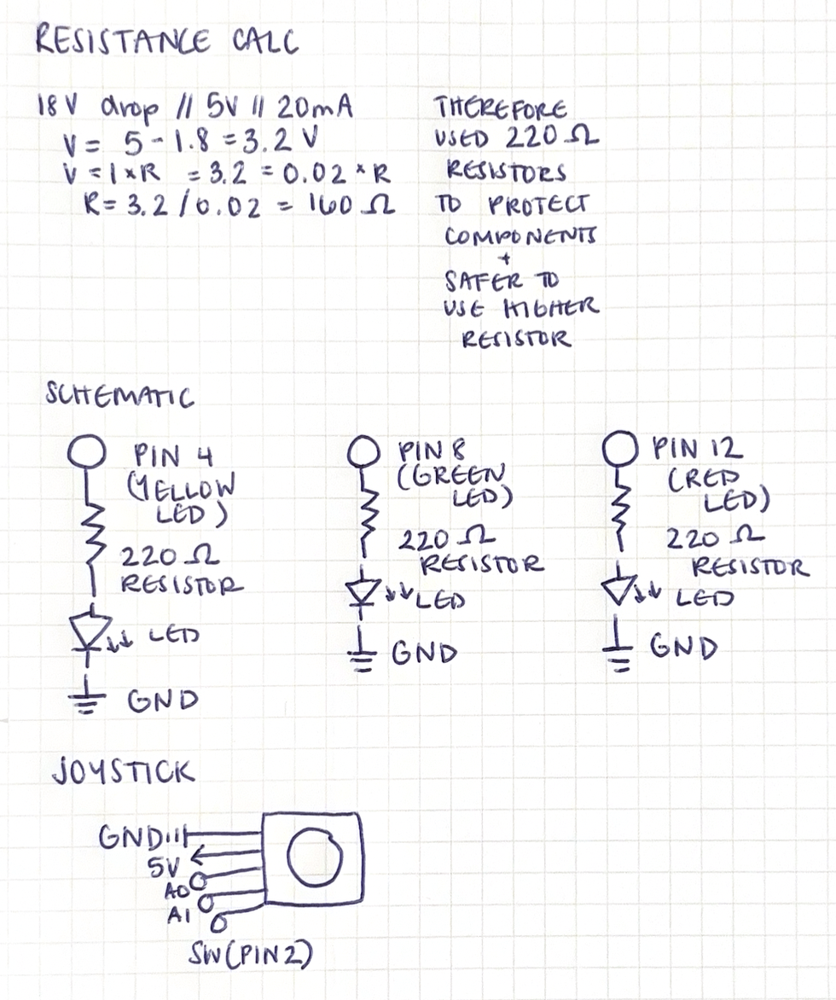

Schematic
Image of my schematic for the circuit & resistance calculation.
'Talking to the web!' Circuit Documentation

This is my 'Talking to the Web!' circuit.
.ino code
// This code reads joystick input and controls three different LEDs based on serial commands from my computer
const int Xpin = A0; // X-axis pin
const int Ypin = A1; // Y-axis pin
const int swPin = 2; // Joystick button pin
const int greenLED = 8; // Green LED pin
const int redLED = 12; // Red LED pin
const int yellowLED = 4; // Yellow LED pin
void setup() {
Serial.begin(9600);
pinMode(swPin, INPUT_PULLUP); // Set button pin as input with internal pull-up resistor
pinMode(greenLED, OUTPUT);
pinMode(redLED, OUTPUT);
pinMode(yellowLED, OUTPUT);
}
void loop(){
// Read joystick values
int xValue = analogRead(Xpin); // Read X-axis value
int yValue = analogRead(Ypin); // Read Y-axis value
int swState = digitalRead(swPin); // Read button state
Serial.print(xValue);
Serial.print(",");
Serial.print(yValue);
Serial.print(",");
Serial.println(swState);
if(Serial.available()){
String command = Serial.readStringUntil('\n');
command.trim(); // Remove any trailing newline or spaces
if(command == "circle"){ //Turns green LED on when the joystick in in the circle position
digitalWrite(greenLED, HIGH);
digitalWrite(redLED, LOW);
digitalWrite(yellowLED, LOW);
} else if(command == "square"){ //Turns red LED on when the joystick in in the square position
digitalWrite(greenLED, LOW);
digitalWrite(redLED, HIGH);
digitalWrite(yellowLED, LOW);
} else if(command == "triangle"){ //Turns yellow LED on when the joystick in in the triangle position
digitalWrite(redLED, LOW);
digitalWrite(greenLED, LOW);
digitalWrite(yellowLED, HIGH);
}
}
delay(50); // Small delay for stability
}
.js code
// This is a p5.js sketch that reads joystick values from an Arduino
// and displays a shape on the canvas based on the joystick position.
// It also sends the shape name back to the Arduino via serial communication.
// Import the p5.serialport library
import "p5.serialport";
const BAUD_RATE = 9600; // This should match the baud rate in your Arduino sketch
let port, connectBtn; // Declare global variables
function setup() {
setupSerial(); // Run our serial setup function (below)
// Create a canvas that is the size of our browser window.
// windowWidth and windowHeight are p5 variables
createCanvas(windowWidth, windowHeight);
// p5 text settings. BOLD and CENTER are constants provided by p5.
// See the "Typography" section in the p5 reference: https://p5js.org/reference/
textFont("system-ui", 50);
textStyle(BOLD);
textAlign(CENTER, CENTER);
}
function draw() {
const portIsOpen = checkPort(); // Check whether the port is open (see checkPort function below)
if (!portIsOpen) return; // If the port is not open, exit the draw loop
let str = port.readUntil("\n"); // Read from the port until the newline
if (str.length == 0) return; // If we didn't read anything, return.
// Trim the whitespace (the newline) and convert the string to a number
let values = str.trim().split(","); // Split the string into an array
if (values.length < 2) return; // If we don't have two values, return
const xValue = Number(values[0]);
const yValue = Number(values[1]);
// Map the joystick values to the canvas size
const xPos = map(xValue, 0, 1023, 0, windowWidth);
const yPos = map(yValue, 0, 1023, 0, windowHeight);
// Make the background black and the fill white
background("black");
fill("white");
let shape = "";
if (xValue < 400) {
fill("green");
ellipse(xPos, yPos, 100, 100); // Draw circle
shape = "circle";
} else if (xValue < 700) {
fill("red");
rect(xPos - 50, yPos - 50, 100, 100); // Draw square
shape = "square";
} else {
fill("yellow");
triangle(xPos, yPos - 50, xPos - 50, yPos + 50, xPos + 50, yPos + 50); // Draw triangle
shape = "triangle";
}
port.write(shape.toLowerCase() + "\n"); // Send the shape name back to Arduino
// Display the shape name
fill("white");
text(`Shape: ${shape}`, windowWidth / 2, 50);
}
// Three helper functions for managing the serial connection.
function setupSerial() {
port = createSerial();
// Check to see if there are any ports we have used previously
let usedPorts = usedSerialPorts();
if (usedPorts.length > 0) {
// If there are ports we've used, open the first one
port.open(usedPorts[0], BAUD_RATE);
}
// create a connect button
connectBtn = createButton("Connect to Arduino");
connectBtn.position(5, 5); // Position the button in the top left of the screen.
connectBtn.mouseClicked(onConnectButtonClicked); // When the button is clicked, run the onConnectButtonClicked function
}
function checkPort() {
if (!port.opened()) {
// If the port is not open, change button text
connectBtn.html("Connect to Arduino");
// Set background to gray
background("gray");
return false;
} else {
// Otherwise we are connected
connectBtn.html("Disconnect");
return true;
}
}
function onConnectButtonClicked() {
// When the connect button is clicked
if (!port.opened()) {
// If the port is not opened, we open it
port.open(BAUD_RATE);
} else {
// Otherwise, we close it!
port.close();
}
}
Operation Video
Video of my circuit in action.
Questions
I used Microsoft Co-Pilot to help me debug my code when I was trying to understand the functionality of the SW (pin) on the joystick. Everytime I included code that had an else statement for the joystick's position when there would be no shapes, it didn't work. Microsoft Co-Pilot was unable to help me understand why that was happening, so I ended up just removing that part of the code entirely and it worked. I would've liked to figure out how to make the joystick be at a resting state, but instead, my joystick starts in the square shape with the red LED on. I also used Co-Pilot to help me understand how to read serial commands from p5.js to the Arduino, which I was struggling with at first.